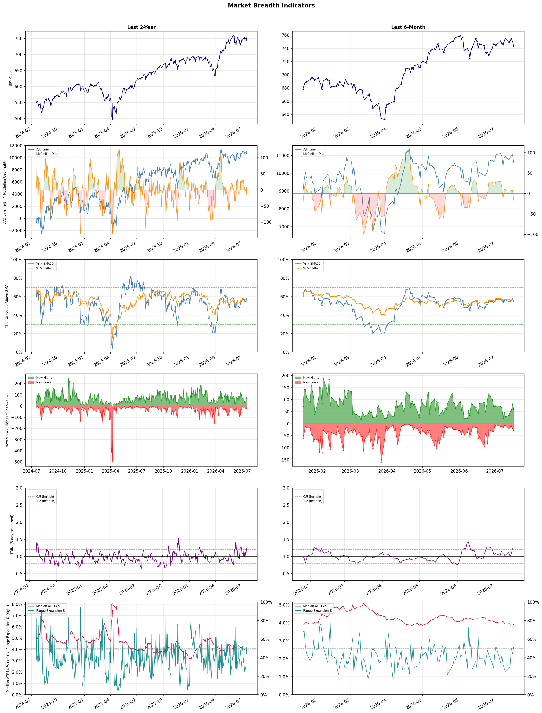

A daily market breadth and sector rotation report for active investors
| Item | Read |
|---|---|
| Regime | Selective Risk-On |
| Risk posture | Selective |
| Universe | 1,339 stocks tracked · 60 new 52-week highs · 30 active swing setups |
| Breadth | 55.7% of tracked stocks are above SMA50 — neutral range, new highs exceed new lows (60 vs 27), McClellan oscillator (breadth momentum) is negative at -16.7 |
| Leadership | Oil & Gas Refining & Marketing, Diagnostics & Research, and REIT - Office |
| Weakest groups | Uranium, Other Industrial Metals & Mining, and Gold |
Use this report to prioritize research and chart review; validate entries, stops, liquidity, earnings, and risk before acting.
| Item | Read |
|---|---|
| Primary read | Selective Risk-On regime with Selective risk posture. |
| Research queue | PBF, DINO, MPC, VLO, UGP |
| Leadership focus | Oil & Gas Refining & Marketing, Diagnostics & Research, and REIT - Office |
| Caution list | Uranium, Other Industrial Metals & Mining, and Gold |
| Review prompt | Check extension risk, chart location, fundamentals, valuation, and earnings before using any research row. |
| Item | Read |
|---|---|
| Primary read | 2 active risk warnings; use screen output as watchlist input only. |
| Bullish screens | DINO, MPC, PBF, ACHC, LFST |
| Bearish screens | TUYA, OTF |
| Alerts / levels | Automated trigger, stop, ATR, liquidity, reward/risk, and event-risk levels are pending future enrichment. |
| Review prompt | Open the linked chart, define trigger and invalidation, then check liquidity and event risk independently. |
Risk Posture: Selective — screen backdrop supports selective research in leading industries
Metric context: McClellan below -50 = elevated selling pressure; below -100 = washout territory. Range Expansion = share of stocks with daily range above their 20-day average. Signal Density = share of tracked names appearing in signal screens.
| Breadth Date | % > SMA50 | % > SMA200 | New Highs | New Lows | McClellan | Median Range | Avg Range | Median ATR14 | Range Expansion | Signal Density |
|---|---|---|---|---|---|---|---|---|---|---|
| 2026-07-17 | 55.7% | 55.0% | 60 | 27 | -16.7 | 3.8% | 4.4% | 3.9% | 51.6% | 10.2% |

Prior comparison date: July 16, 2026
| Metric | Prior | Current | Change |
|---|---|---|---|
| Regime | Selective Risk-On | Selective Risk-On | unchanged |
| Risk Posture | Selective | Selective | unchanged |
| % > SMA50 | 58.2% | 55.7% | -2.4 pts |
| % > SMA200 | 57.1% | 55.0% | -2.1 pts |
| New Highs | 82 | 60 | -22 |
| New Lows | 20 | 27 | -7 |
Top-10 industries entering: REIT - Healthcare Facilities and REIT - Retail. Top-10 industries leaving: Advertising Agencies and Banks - Diversified. New multi-signal long setups: AFL, AHR, CF, CHRW, CTRE, CTVA, CVS, DBRG, GGAL, GPRE. New multi-signal short setups: none.
| Status | Tickers | Read |
|---|---|---|
| Added | AFL, AHR, CF, CHRW, CTRE, CTVA, CVS, DBRG | New technical screen matches vs prior report. |
| Removed | ABCL, AMRX, ASB, BANC, COLB, CROX, CUZ, DHR | No longer present in today's technical screen matches. |
| Still Active | ACHC, DINO, DOC, GNW, MRVI, PBA, ROKU, TECH | Appeared in both current and prior reports. |
| Promoted | none | Model Screen Score improved by at least 15 points. |
| Downgraded | none | Model Screen Score declined by at least 15 points. |
| Direction | Industry | ETF | Prior Rank | Current Rank | Days | Rank Change |
|---|---|---|---|---|---|---|
| Rose | Oil & Gas Refining & Marketing | CRAK | 84 | 1 | 28 | +83 |
| Rose | Household & Personal Products | XLP | 91 | 16 | 42 | +75 |
| Rose | Insurance Brokers | N/A | 85 | 13 | 28 | +72 |
| Rose | REIT - Healthcare Facilities | XLRE | 77 | 7 | 35 | +70 |
| Rose | Auto & Truck Dealerships | N/A | 76 | 17 | 42 | +59 |
Bull: The Oil & Gas Refining & Marketing sector, as represented by the CRAK ETF, is experiencing a resurgence due to a combination of rising oil prices and improved demand dynamics, particularly in light of recent headlines indicating hopes for Middle East de-escalation, which could stabilize supply concerns. Additionally, the sector's strong performance, highlighted by PBF Energy's 6.1% jump and CRAK hitting a new 52-week high, suggests that investors are increasingly confident in the profitability of refiners amid favorable industry tailwinds and a relative shift in market strength compared to other sectors.
Bear: While the recent performance of the CRAK ETF and individual refiners like PBF Energy may seem promising, the underlying fundamentals suggest caution. The potential for a demand downturn, driven by economic uncertainties and the looming threat of recession, could severely impact refining margins. Additionally, any stabilization in Middle East tensions may not translate to sustained oil price increases, especially if global supply outpaces demand, which could lead to a sharp correction in the sector's recent gains.
Verdict: The Oil & Gas Refining & Marketing sector is currently benefiting from rising oil prices and improved demand dynamics, bolstered by hopes for de-escalation in the Middle East, which has alleviated supply concerns. However, investors should remain cautious of the potential for a demand downturn due to economic uncertainties, as a recession could significantly compress refining margins and lead to a correction in the sector's recent gains.
Sources: Yahoo Finance, Google News
Bull: The Household & Personal Products sector is experiencing rising relative strength due to a positive earnings outlook, as indicated by the headline "XLP's Future Earnings Outlook Is Tilting Up," which suggests improving profitability and consumer demand. Additionally, the sector's resilience amid broader market volatility, highlighted by multiple reports of consumer stocks rising in afternoon trading, reflects a shift toward stable, essential goods as investors seek safety and dependable growth in uncertain economic conditions. This trend is further supported by recognition of top value stocks and dividend growth potential within the sector, as noted by Morningstar and Kiplinger.
Bear: While the bullish narrative highlights the rising earnings outlook and consumer demand for household and personal products, it overlooks the potential headwinds facing the sector, such as rising input costs and supply chain disruptions that could erode margins. Additionally, the recent volatility in consumer stocks suggests that investor sentiment may be shifting, indicating that the perceived safety of staples could be overstated if economic conditions worsen or if inflation continues to pressure consumer spending. Thus, the stability of the sector may not be as robust as suggested, and reliance on dividend growth could be risky if companies prioritize maintaining cash flow amid tightening margins.
Verdict: The Household & Personal Products sector's rising strength is primarily driven by a positive earnings outlook and increasing consumer demand for essential goods, as investors seek stability amid economic uncertainty. However, key risks include rising input costs and potential supply chain disruptions, which could pressure profit margins and undermine the sector's perceived safety. Investors should monitor these factors closely and consider the implications for dividend sustainability in the face of tightening margins.
Sources: Yahoo Finance, Google News
Bull: The rising relative strength of the Insurance Brokers industry can be attributed to strong earnings performance, as highlighted by Ryan Specialty's top marks in Q1, indicating robust demand and operational efficiency within the sector. Additionally, the ongoing consolidation trend, as noted in the Yahoo Finance article, suggests that mergers and acquisitions are driving growth and market share expansion, further enhancing the industry's attractiveness despite temporary disruptions from AI concerns. Overall, the combination of solid financial results and strategic consolidation positions Insurance Brokers favorably in the current market landscape.
Bear: While the bull thesis highlights strong earnings and consolidation as positive indicators, it overlooks the significant risks posed by emerging AI technologies that threaten to disrupt traditional insurance brokerage models. The recent headlines indicating a selloff due to AI disruption fears suggest that the market is beginning to price in these potential challenges, which could undermine the profitability and operational efficiency that have been driving recent performance. Furthermore, the reliance on M&A for growth may mask underlying weaknesses in organic demand, making the industry vulnerable to shifts in market sentiment and regulatory scrutiny.
Verdict: The Insurance Brokers industry is experiencing rising strength primarily due to strong earnings performance and strategic consolidation, which are enhancing market share and operational efficiency. However, the key risk lies in the potential disruption from emerging AI technologies, which could undermine traditional brokerage models and impact profitability, necessitating a close watch on regulatory developments and market sentiment shifts. Investors should consider balancing their exposure in this sector by monitoring both M&A activity and advancements in AI that could reshape the competitive landscape.
Sources: Google News
Bull: The rising relative strength of the Healthcare Facilities REIT sector can be attributed to the increasing recognition of its stability and growth potential, especially in light of recent headlines highlighting top-performing healthcare REITs for long-term investment. As financial stocks experience volatility, investors may be seeking safer, more resilient sectors, with healthcare facilities offering essential services that remain in demand regardless of economic conditions. This shift in focus towards healthcare REITs is further supported by their appeal for retirement portfolios, as noted by U.S. News, suggesting a growing trend of investors prioritizing stability and income in their investment strategies.
Bear: While the rising relative strength of Healthcare Facilities REITs may suggest stability, this sector is not immune to significant headwinds, including rising interest rates and inflationary pressures that can erode profit margins and increase financing costs. Additionally, the potential for reduced government healthcare spending and regulatory changes could impact occupancy rates and rental income, making these investments riskier than perceived. Investors should also be cautious of overvaluation in a sector that may be experiencing speculative buying, rather than genuine demand-driven growth.
Verdict: The Healthcare Facilities REIT sector is experiencing rising relative strength due to its perceived stability and growth potential amid economic volatility, as investors seek safer assets that provide essential services and income, particularly for retirement portfolios. However, key risks include rising interest rates and inflation, which could erode profit margins and increase financing costs, alongside potential reductions in government healthcare spending that may impact occupancy rates and rental income. Investors should carefully evaluate these risks and consider the potential for overvaluation in the sector before making investment decisions.
Sources: Yahoo Finance, Google News
Bull: The Auto & Truck Dealerships sector is likely experiencing rising relative strength due to a combination of expanding market opportunities and positive economic indicators. Carvana's expansion into new vehicle offerings, as highlighted by CNBC, suggests a strategic shift that could reshape the automotive retail landscape, attracting more consumers and driving sales. Additionally, the optimistic outlook for automotive stocks through 2026, as noted by The Motley Fool, reflects investor confidence in the industry's resilience and growth potential amidst competing economic forces, further bolstering the sector's performance compared to other industries.
Bear: While the bull thesis highlights expanding market opportunities and positive economic indicators, it overlooks significant headwinds facing the Auto & Truck Dealerships sector, including rising interest rates and potential economic downturns that could dampen consumer spending on big-ticket items like vehicles. Moreover, Carvana's expansion into new vehicle offerings may not guarantee success, as increased competition and potential supply chain challenges could undermine profitability and market share, leading to a more cautious outlook for the industry as a whole.
Verdict: The Auto & Truck Dealerships sector is likely experiencing rising relative strength due to expanding market opportunities and positive economic indicators, which are attracting consumer interest and driving sales. However, a key risk remains in the form of rising interest rates and potential economic downturns that could suppress consumer spending on vehicles, making it crucial for investors to monitor economic trends and consumer confidence closely. To capitalize on this growth while mitigating risks, stakeholders should consider diversifying their offerings and enhancing operational efficiencies to navigate potential challenges.
Sources: Google News
| Direction | Industry | ETF | Prior Rank | Current Rank | Days | Rank Change |
|---|---|---|---|---|---|---|
| Fell | Electrical Equipment & Parts | XLI | 6 | 79 | 42 | -73 |
| Fell | Semiconductor Equipment & Materials | SOXX | 3 | 70 | 28 | -67 |
| Fell | Copper | COPX | 17 | 84 | 28 | -67 |
| Fell | Communication Equipment | IYZ | 8 | 73 | 42 | -65 |
| Fell | Aerospace & Defense | ITA | 22 | 85 | 42 | -63 |
Bear: While the bull analyst attributes the declining relative strength of the Electrical Equipment & Parts sector to the broader market's retreat from semiconductor stocks, this overlooks the fundamental challenges facing the sector itself, such as rising raw material costs and supply chain disruptions that continue to pressure margins. Furthermore, the shift in investor focus toward AI and infrastructure could indicate a longer-term trend away from traditional industrials, suggesting that the Electrical Equipment & Parts sector may struggle to regain traction as capital flows into sectors perceived as more innovative and growth-oriented.
Bull: The Electrical Equipment & Parts sector is likely experiencing a decline in relative strength due to the broader market's retreat from semiconductor stocks, as indicated by multiple headlines highlighting the weakness in chipmaker equities. This trend may be impacting investor sentiment across the industrials, including electrical equipment, as funds shift focus toward sectors like AI and infrastructure that are perceived to have stronger growth prospects, as seen in the mention of an infrastructure fund benefiting from the AI build-out. Additionally, the mixed performance of equity futures suggests uncertainty in the market, further contributing to the relative underperformance of the Electrical Equipment & Parts sector.
Verdict: The Electrical Equipment & Parts sector is likely experiencing a decline due to a combination of external market pressures, particularly the retreat from semiconductor stocks, and internal challenges such as rising raw material costs and ongoing supply chain disruptions. The key risk from the bear case is that the shift in investor focus toward AI and infrastructure may signal a longer-term trend away from traditional industrials, potentially limiting the sector's ability to recover as capital continues to flow into more innovative areas. Investors should closely monitor these dynamics and consider reallocating to sectors with stronger growth prospects.
Sources: Yahoo Finance, Google News
Bear: While the bull analyst attributes the semiconductor sector's relative weakness to broader market volatility and temporary bargain-hunting, the underlying fundamentals of the industry present significant headwinds. The persistent decline in demand for consumer electronics, coupled with rising inventory levels and potential overcapacity in manufacturing, suggests that the recent rebounds in specific stocks may be short-lived. Furthermore, the ongoing geopolitical tensions and supply chain disruptions could exacerbate the challenges faced by semiconductor companies, leading to a more prolonged downturn in the sector.
Bull: The Semiconductor Equipment & Materials sector is experiencing a decline in relative strength primarily due to broader market volatility and investor sentiment shifting away from tech stocks, as indicated by headlines highlighting significant losses in major chipmakers like AMD, Intel, and NVIDIA. Additionally, the recent dip in semiconductor stocks, followed by a brief rebound in names like SK Hynix and FormFactor, suggests that while there is bargain-hunting activity, the overall uncertainty in the tech sector—exemplified by the impact of Moonshot AI's model on investor confidence—continues to weigh heavily on the industry. This combination of macroeconomic factors and sector rotation is contributing to the relative weakness observed in the semiconductor space.
Verdict: The semiconductor equipment and materials sector is likely experiencing a decline due to a combination of falling demand for consumer electronics, rising inventory levels, and potential overcapacity in manufacturing, which are all exacerbated by broader market volatility and geopolitical tensions. Investors should be cautious, as the bear case highlights significant risks from sustained demand weakness and supply chain disruptions that could lead to a prolonged downturn in the industry. Therefore, it may be prudent to reassess exposure to semiconductor stocks and consider diversifying into sectors less affected by these headwinds.
Sources: Yahoo Finance, Google News
Bear: While the bull analyst points to concerns over global manufacturing and the electrification debate as reasons for copper's relative strength decline, these factors also highlight a fundamental vulnerability in the copper market. The increasing reliance on AI and technology sectors may not translate into sustained demand for copper, especially if economic conditions deteriorate, leading to reduced industrial activity and investment in infrastructure. Furthermore, the copper market is susceptible to geopolitical tensions and supply chain disruptions, which could exacerbate price volatility and undermine any bullish narratives surrounding electrification or technological advancements.
Bull: Copper's relative strength is likely falling due to concerns over global manufacturing weakening, as highlighted in the headline "If Global Manufacturing Weakens, Here’s What Happens to This Copper ETF." This sentiment is compounded by the ongoing debate between copper miners and futures in the context of electrification, as seen in "COPX vs. CPER: Do Copper Miners or Copper Futures Best Play the Electrification Squeeze?" Additionally, the focus on AI and technology sectors, as indicated by headlines discussing copper's role in the AI boom, may divert investor attention away from copper-related investments, impacting its relative strength against other industries.
Verdict: The recent decline in copper prices is primarily driven by concerns over weakening global manufacturing and the potential for reduced industrial demand, as highlighted by the ongoing debate surrounding electrification and the impact of AI on investment priorities. A key risk from the bear case is the vulnerability of the copper market to geopolitical tensions and supply chain disruptions, which could further exacerbate price volatility and undermine any bullish outlook tied to technological advancements. Investors should closely monitor global economic indicators and geopolitical developments to gauge the sustainability of copper demand moving forward.
Sources: Yahoo Finance, Google News
Bear: While the bull analyst points to AI as a potential growth driver, the current volatility and mixed performance within the Communication Equipment sector raise significant concerns about its stability and future trajectory. The sharp decline in stocks like Viavi Solutions amidst broader sector selling indicates underlying weaknesses that could overshadow any temporary rallies, and the uncertainty surrounding companies like Charter Communications suggests that investor confidence is not just wavering but may be fundamentally eroding. Additionally, the falling relative strength trend highlights a lack of sustained momentum, making it difficult to justify a bullish outlook in the face of these persistent headwinds.
Bull: The recent decline in the relative strength of the Communication Equipment sector can be attributed to mixed market sentiment and volatility, as highlighted by the varied performance of individual stocks like Viavi Solutions, which dropped 8.3% amid sector-wide selling, contrasting with Viasat's 6.1% gain during a broader rally. Additionally, uncertainty surrounding the outlook for companies like Charter Communications, as indicated by the question of whether Wall Street is bullish or bearish, suggests that investor confidence is wavering, impacting the overall sector's performance. However, the mention of AI driving networking demand by Citi indicates potential for future growth, which could ultimately support a bullish outlook for the sector.
Verdict: The Communication Equipment sector is experiencing a decline primarily due to mixed market sentiment and volatility, as evidenced by the divergent performances of stocks like Viavi Solutions and Viasat, which reflect investor uncertainty. The key risk highlighted by the bear case is the potential erosion of investor confidence, particularly regarding companies like Charter Communications, which could hinder any recovery despite potential growth drivers like AI. Investors should remain cautious and consider the sector's instability before making bullish commitments.
Sources: Yahoo Finance, Google News
Bear: While the Aerospace & Defense sector may benefit from increased government spending, the current market sentiment is heavily influenced by broader economic factors, including rising interest rates and inflation, which can strain defense budgets over time. Additionally, the geopolitical landscape is unpredictable, and any potential de-escalation in conflicts could lead to reduced military spending, undermining the bullish narrative of a sustained rearmament cycle. Furthermore, the focus on technology stocks like Tesla indicates a shift in investor priorities, which could continue to divert capital away from the defense sector, limiting its growth potential.
Bull: The Aerospace & Defense sector is currently experiencing a relative strength decline primarily due to market sentiment focusing on broader technology stocks, such as Tesla, which have outperformed in recent months, as indicated by the headline about ITA rising without owning Tesla. However, the sector is poised for a significant rebound as governments globally are ramping up defense spending, with NATO committing to allocate 5% of GDP to defense by 2035, suggesting that the current dip may be temporary and overshadowed by strong long-term growth drivers. Additionally, the surge in defense stocks, driven by increased investments in weapons and AI battlefield technology, indicates robust underlying demand that could catalyze a turnaround in relative strength.
Verdict: The Aerospace & Defense sector's current decline is primarily driven by shifting market sentiment towards high-growth technology stocks, overshadowing the potential benefits of increased government defense spending. However, the key risk lies in the unpredictable geopolitical landscape and the impact of rising interest rates and inflation on defense budgets, which could hinder sustained growth in the sector. Investors should closely monitor these macroeconomic factors and geopolitical developments to assess the viability of a rebound in defense stocks.
Sources: Yahoo Finance, Google News
| Industry | Rank | ETF | 7d | 14d | 28d | 42d | Chg 42d | Size | 20D | 60D | Composite | Active Setups |
|---|---|---|---|---|---|---|---|---|---|---|---|---|
| Oil & Gas Refining & Marketing | 1 | CRAK | 10 | 47 | 84 | 35 | +34 | 7 | 32.3% | 26.8% | 0.946 | 0 |
| Diagnostics & Research | 2 | N/A | 7 | 4 | 12 | 18 | +16 | 16 | 18.5% | 33.5% | 0.928 | 0 |
| REIT - Office | 3 | XLRE | 23 | 6 | 10 | 10 | +7 | 8 | 11.4% | 33.0% | 0.917 | 0 |
| Medical Care Facilities | 4 | IHF | 3 | 7 | 35 | 42 | +38 | 9 | 15.6% | 18.5% | 0.900 | 0 |
| Health Information Services | 5 | N/A | 8 | 8 | 14 | 21 | +16 | 12 | 14.2% | 27.3% | 0.869 | 0 |
| Insurance - Property & Casualty | 6 | KIE | 6 | 5 | 54 | 56 | +50 | 8 | 10.7% | 15.9% | 0.853 | 1 |
| REIT - Healthcare Facilities | 7 | XLRE | 26 | 16 | 72 | 61 | +54 | 10 | 12.9% | 14.4% | 0.845 | 1 |
| Biotechnology | 8 | XBI | 5 | 3 | 22 | 53 | +45 | 93 | 10.4% | 18.3% | 0.841 | 1 |
| REIT - Retail | 9 | N/A | 46 | 28 | 52 | 36 | +27 | 11 | 8.8% | 8.5% | 0.822 | 1 |
| Insurance - Life | 10 | N/A | 15 | 33 | 50 | 34 | +24 | 7 | 9.5% | 12.6% | 0.821 | 0 |
Rank columns (7d–42d) show the industry's rank that many trading days ago — lower is stronger. Chg 42d = rank change vs 42 trading days ago — positive means the industry moved up. 20D and 60D are the mean stock return within the industry over that period. Active Setups: count of today's swing-trade candidates from this industry appearing across all signal screens.
| Industry | Rank | ETF | 7d | 14d | 28d | 42d | Chg 42d | Size | 20D | 60D | Composite | Active Setups |
|---|---|---|---|---|---|---|---|---|---|---|---|---|
| Uranium | 88 | URA | 77 | 88 | 71 | 96 | +8 | 6 | -19.0% | -31.3% | 0.042 | 0 |
| Other Industrial Metals & Mining | 87 | N/A | 88 | 82 | 40 | 70 | -17 | 21 | -25.1% | -26.4% | 0.045 | 0 |
| Gold | 86 | GDX | 81 | 86 | 83 | 97 | +11 | 27 | -18.3% | -26.7% | 0.063 | 0 |
| Aerospace & Defense | 85 | ITA | 86 | 66 | 65 | 22 | -63 | 26 | -20.2% | -23.5% | 0.077 | 0 |
| Copper | 84 | COPX | 84 | 80 | 17 | 69 | -15 | 6 | -18.6% | -15.3% | 0.091 | 0 |
| Chemicals | 83 | N/A | 87 | 87 | 82 | 81 | -2 | 8 | -11.2% | -20.3% | 0.148 | 0 |
| Utilities - Renewable | 82 | N/A | 83 | 75 | 47 | N/A | N/A | 7 | -17.8% | -10.9% | 0.151 | 0 |
| Utilities - Independent Power Producers | 81 | XLU | 54 | 83 | 58 | 95 | +14 | 5 | -8.5% | -9.6% | 0.190 | 0 |
| Specialty Industrial Machinery | 80 | N/A | 68 | 70 | 51 | 78 | -2 | 21 | -11.0% | -17.3% | 0.192 | 1 |
| Electrical Equipment & Parts | 79 | XLI | 55 | 46 | 9 | 6 | -73 | 12 | -23.6% | -3.4% | 0.201 | 0 |
Rank columns (7d–42d) show the industry's rank that many trading days ago — lower is stronger. Chg 42d = rank change vs 42 trading days ago — positive means the industry moved up. 20D and 60D are the mean stock return within the industry over that period. Active Setups: count of today's swing-trade candidates from this industry appearing across all signal screens.
These are research candidates from top-ranked stocks, capped at five names per industry to avoid over-concentration. Returns shown (60D, 120D, 250D) are historical — they reflect where prices have already moved, not forward expectations. Extension Risk flags names that may require extra patience or a better entry point. They are not buy signals.
Chart: TV = TradingView chart (opens in browser); PDF = local chart file (if downloaded).
| Ticker | Name | Industry | Industry Rank | Market Cap | 60D Hist | 120D Hist | 250D Hist | Extension Risk | Research Reason | Chart |
|---|---|---|---|---|---|---|---|---|---|---|
| PBF | PBF Energy | Oil & Gas Refining & Marketing | 1 | N/A | 54.2% | 87.8% | 157.5% | Extended | Top-ranked in industry; extended | TV |
| DINO | HF Sinclair | Oil & Gas Refining & Marketing | 1 | N/A | 48.7% | 77.2% | 101.6% | Constructive | Top-ranked in industry | TV |
| MPC | Marathon Petroleum | Oil & Gas Refining & Marketing | 1 | N/A | 41.9% | 78.2% | 79.4% | Constructive | Top-ranked in industry | TV |
| VLO | Valero Energy | Oil & Gas Refining & Marketing | 1 | N/A | 32.7% | 65.5% | 111.9% | Constructive | Top-ranked in industry | TV |
| UGP | Ultrapar Participacoes | Oil & Gas Refining & Marketing | 1 | N/A | 6.1% | 35.0% | 120.8% | Constructive | Top-ranked in industry | TV |
| PSNL | Personalis | Diagnostics & Research | 2 | N/A | 146.6% | 51.3% | 148.6% | Very extended | Top-ranked in industry; very extended | TV |
| NEO | NeoGenomics | Diagnostics & Research | 2 | N/A | 83.5% | 14.1% | 134.1% | Extended | Top-ranked in industry; extended | TV |
| GH | Guardant Health | Diagnostics & Research | 2 | N/A | 72.5% | 35.8% | 235.5% | Extended | Top-ranked in industry; extended | TV |
| ADPT | Adaptive Biotechnologies | Diagnostics & Research | 2 | N/A | 57.2% | 20.3% | 118.3% | Extended | Top-ranked in industry; extended | TV |
| IQV | IQVIA Holdings | Diagnostics & Research | 2 | N/A | 17.4% | -12.3% | 28.4% | Constructive | Top-ranked in industry | TV |
| HPP | Hudson Pacific Properties | REIT - Office | 3 | N/A | 88.7% | 67.2% | -11.9% | Extended | Top-ranked in industry; extended | TV |
| HIW | Highwoods Properties Inc | REIT - Office | 3 | N/A | 39.5% | 26.5% | 9.9% | Constructive | Top-ranked in industry | TV |
| CUZ | Cousins Properties Inc | REIT - Office | 3 | N/A | 29.0% | 21.5% | 12.5% | Constructive | Top-ranked in industry | TV |
| KRC | Kilroy Realty Corp | REIT - Office | 3 | N/A | 26.5% | 13.1% | 9.3% | Constructive | Top-ranked in industry | TV |
| BXP | BXP Inc | REIT - Office | 3 | N/A | 19.4% | 6.7% | 1.3% | Constructive | Top-ranked in industry | TV |
| LFST | LifeStance Health | Medical Care Facilities | 4 | N/A | 70.5% | 57.8% | 174.4% | Extended | Top-ranked in industry; extended | TV |
| AVAH | Aveanna Healthcare | Medical Care Facilities | 4 | N/A | 51.2% | 11.6% | 144.7% | Extended | Top-ranked in industry; extended | TV |
| ACHC | Acadia Healthcare | Medical Care Facilities | 4 | N/A | 25.7% | 126.5% | 57.4% | Extended | Top-ranked in industry; extended | TV |
| BKD | Brookdale Senior Living | Medical Care Facilities | 4 | N/A | 14.4% | 15.9% | 94.7% | Constructive | Top-ranked in industry | TV |
| SGRY | Surgery Partners | Medical Care Facilities | 4 | N/A | 9.7% | -0.9% | -28.4% | Constructive | Top-ranked in industry | TV |
These are technical screen matches from existing signal files. They are not trade recommendations. Trigger, stop, ATR, liquidity, reward/risk, and event risk still require separate validation until those inputs are available.
Model Screen Score is weighted by signal count, industry rank, freshness, and setup type. It is not a probability of profit, expected return, or suitability rating. Industry cap: max 3 candidates per industry.
Signal glossary: Momentum Pullback = stock in an uptrend that has pulled back 10–30% and shows re-entry conditions. MA Compression = short- and long-term moving averages converging, often preceding a directional move. Three-Day Up/Down = three consecutive closes in the same direction. New 52Wk High/Low = price reached a new annual extreme.
Chart: TV = TradingView chart (opens in browser); PDF = local chart file (if downloaded).
| Ticker | Industry | Setups | Close | Industry Rank | Signal Count | Model Screen Score | Reason | Chart |
|---|---|---|---|---|---|---|---|---|
| DINO | Oil & Gas Refining & Marketing | New 52Wk High; Three-Day Up | 88.59 | 1 | 2 | 100 | Multi-signal; top industry breakout | TV |
| MPC | Oil & Gas Refining & Marketing | New 52Wk High; Three-Day Up | 312.60 | 1 | 2 | 100 | Multi-signal; top industry breakout | TV |
| PBF | Oil & Gas Refining & Marketing | New 52Wk High; Three-Day Up | 62.75 | 1 | 2 | 100 | Multi-signal; top industry breakout | TV |
| ACHC | Medical Care Facilities | New 52Wk High; Three-Day Up | 34.50 | 4 | 2 | 93 | Multi-signal; top industry breakout | TV |
| LFST | Medical Care Facilities | New 52Wk High; Three-Day Up | 11.58 | 4 | 2 | 93 | Multi-signal; top industry breakout | TV |
| TRV | Insurance - Property & Casualty | New 52Wk High; Three-Day Up | 368.98 | 6 | 2 | 93 | Multi-signal; top industry breakout | TV |
| AHR | REIT - Healthcare Facilities | New 52Wk High; Three-Day Up | 57.16 | 7 | 2 | 93 | Multi-signal; top industry breakout | TV |
| CTRE | REIT - Healthcare Facilities | New 52Wk High; Three-Day Up | 42.88 | 7 | 2 | 93 | Multi-signal; top industry breakout | TV |
| DOC | REIT - Healthcare Facilities | New 52Wk High; Three-Day Up | 22.51 | 7 | 2 | 93 | Multi-signal; top industry breakout | TV |
| ORI | Insurance - Property & Casualty | MA Compression; Three-Day Up | 42.24 | 6 | 2 | 88 | Multi-signal; top industry setup | TV |
| MRVI | Biotechnology | New 52Wk High; Three-Day Up | 7.24 | 8 | 2 | 85 | Multi-signal; top industry breakout | TV |
| TECH | Biotechnology | New 52Wk High; Three-Day Up | 72.12 | 8 | 2 | 85 | Multi-signal; top industry breakout | TV |
| KIM | REIT - Retail | New 52Wk High; Three-Day Up | 26.12 | 9 | 2 | 85 | Multi-signal; top industry breakout | TV |
| KRG | REIT - Retail | New 52Wk High; Three-Day Up | 29.62 | 9 | 2 | 85 | Multi-signal; top industry breakout | TV |
| AFL | Insurance - Life | New 52Wk High; Three-Day Up | 124.72 | 10 | 2 | 85 | Multi-signal; top industry breakout | TV |
| GNW | Insurance - Life | New 52Wk High; Three-Day Up | 10.09 | 10 | 2 | 85 | Multi-signal; top industry breakout | TV |
| MET | Insurance - Life | New 52Wk High; Three-Day Up | 94.00 | 10 | 2 | 85 | Multi-signal; top industry breakout | TV |
| CVS | Healthcare Plans | New 52Wk High; Three-Day Up | 107.47 | 14 | 2 | 85 | Multi-signal; new-high strength | TV |
| HOMB | Banks - Regional | New 52Wk High; Three-Day Up | 30.84 | 20 | 2 | 77 | Multi-signal; new-high strength | TV |
| PBA | Oil & Gas Midstream | New 52Wk High; Three-Day Up | 51.29 | 23 | 2 | 77 | Multi-signal; new-high strength | TV |
| CHRW | Integrated Freight & Logistics | New 52Wk High; Three-Day Up | 208.50 | 24 | 2 | 77 | Multi-signal; new-high strength | TV |
| ROKU | Entertainment | New 52Wk High; Three-Day Up | 144.43 | 47 | 2 | 65 | Multi-signal; new-high strength | TV |
| DBRG | Asset Management | New 52Wk High; Three-Day Up | 15.80 | 55 | 2 | 65 | Multi-signal; new-high strength | TV |
| CF | Agricultural Inputs | Momentum Pullback; Three-Day Up | 121.42 | 56 | 2 | 65 | Multi-signal; pullback setup | TV |
| CTVA | Agricultural Inputs | New 52Wk High; Three-Day Up | 87.30 | 56 | 2 | 65 | Multi-signal; new-high strength | TV |
| GGAL | Banks - Regional | Momentum Pullback | 49.94 | 20 | 2 | 62 | Multi-signal; pullback setup | TV |
| UAL | Airlines | Momentum Pullback | 115.41 | 30 | 2 | 55 | Multi-signal; pullback setup | TV |
| GPRE | Chemicals | New 52Wk High; Three-Day Up | 19.23 | 83 | 2 | 45 | Multi-signal; new-high strength | TV |
Bearish setups — stocks making new lows or showing persistent downside patterns. Validate carefully before acting.
| Ticker | Industry | Setups | Close | Industry Rank | Signal Count | Model Screen Score | Reason | Chart |
|---|---|---|---|---|---|---|---|---|
| TUYA | Software - Infrastructure | New 52Wk Low; Three-Day Down | 1.74 | 19 | 2 | 47 | Multi-signal; new-low weakness | TV |
| OTF | Asset Management | New 52Wk Low; Three-Day Down | 10.10 | 55 | 2 | 35 | Multi-signal; new-low weakness | TV |
How To Use This Report
| Use | Purpose |
|---|---|
| Market map | Start with breadth, regime, risk warnings, and what changed since the prior report. |
| Industry scan | Use leading, deteriorating, rising, and declining industries to focus research. |
| Research queue | Treat long-term candidates as names for deeper fundamental, valuation, and chart review. |
| Technical review | Treat bullish and bearish screen matches as watchlist inputs that require independent trigger, stop, liquidity, and event-risk checks. |
| Source follow-up | Use chart links and source files to verify raw inputs before relying on any row. |
What This Report Is Not
| Not | Meaning |
|---|---|
| Investment advice | The report does not evaluate personal objectives, risk tolerance, tax situation, account type, or suitability. |
| Buy/sell recommendation | Named tickers are research candidates or screen matches, not recommendations to transact. |
| Price target | The report does not provide fair value estimates, targets, or expected returns. |
| Trade plan | Trigger, stop, sizing, reward/risk, liquidity, and event-risk review remain separate user work. |
| Performance claim | Model Screen Score is not validated historical performance or a forecast of future results. |
| Item | Note |
|---|---|
| Version | Daily Report Methodology v1 |
| Model Screen Score | Screen-fit rank based on signal count, industry rank, freshness, and setup type. |
| Not predictive proof | The score is not expected return, probability of profit, historical validation, or suitability analysis. |
| Industry ranks | Composite industry ranks use existing daily ranking outputs and historical rank columns when available. |
| Research candidates | Long-term rows are research candidates from ranked stocks and leading industries, with historical returns labeled as historical only. |
| Technical matches | Bullish and bearish rows are screen matches requiring independent chart, trigger, stop, liquidity, and event-risk review. |
| Source | Status | Rows | Path |
|---|---|---|---|
| Market breadth | present | 1255 | breadth_20260717.csv |
| Industry composite rankings | present | 88 | all_industry_composite_20260717.csv |
| Top ranked stocks | present | 181 | top_ranked_composite_20260717.csv |
| All ranked stocks | present | 1339 | all_stocks_composite_sorted_20260717.csv |
| Top momentum pullbacks | present | 1489 | top_momentum_pullbacks_20260717.csv |
| MA compression | present | 1489 | ma_compression_stocks_20260717.csv |
| Three-day up/down | present | 303 | three_day_up_down_stocks_20260717.csv |
| New 52-week members | present | 87 | breadth_new_52wk_members_20260717.csv |
This report is generated from automated technical screens and is for informational and research purposes only. It is not investment advice, a solicitation, or a recommendation to buy or sell any security. Past performance is not indicative of future results. You are solely responsible for your own investment decisions. Consult a licensed financial advisor before acting on any information herein.